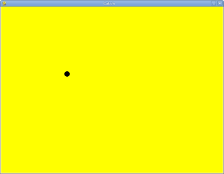

8.1 Getting started
In our first case study we will build a small video game using the
facilities in the GASP package. The game will shoot a ball across a window
from left to right and you will manipulate a mitt
at the right side of
the window to catch it.
8.2 Using while to move a ball
while statements can be used with gasp to add
motion to a program. The following program moves a black ball across an
800 x 600 pixel graphics canvas. Add this to a file named
pitch.py:
from gasp import * begin_graphics(800, 600, title="Catch", background=color.yellow) ball_x = 10 ball_y = 300 ball = Circle((ball_x, ball_y), 10, filled=True) dx = 4 dy = 1 while ball_x < 810: ball_x += dx ball_y += dy move_to(ball, (ball_x, ball_y)) sleep(0.01) end_graphics()
As the ball moves across the screen, you will see a graphics window that looks like this:
Trace the first few iterations of this program to be sure you see what is
happening to the variables x and y.
Some new things to learn about GASP from this example:
begin_graphicscan take arguments for width, height, title, and background color of the graphics canvas.- Adding
filled=TruetoCircle(...)makes the resulting circle solid. ball = Circlestores the circle (we will talk later about what a circle actually is) in a variable namedballso that it can be referenced later.- The
move_tofunction in GASP allows a programmer to pass in a shape (the ball in this case) and a location, and moves the shape to that location. - The
sleepfunction takes a time value in seconds as an argument and pauses execution of the program for that length of time. In general computers do things much to fast to allow you to interact with them. We can slow things down by making the computer sleep a bit at the right place.
8.3 Varying the pitches
To make our game more interesting, we want to be able to vary the speed and
direction of the ball. GASP has a function,
random_between(low, high), that returns a random integer
between low and high. To see how this works,
run the following program:
from gasp import * i = 0 while i < 10: print random_between(-5, 5) i += 1
Each time the function is called a more or less random integer is chosen between -5 and 5. When we ran this program we got:
-2 -1 -4 1 -2 3 -5 -3 4 -5
You will probably get a different sequence of numbers.
Let's use random_between to vary the direction of the ball.
Replace the line in pitch.py that assigns 1
to y:
dy = 1
with an assignment to a random number between -4 and 4:
dy = random_between(-4, 4)
8.4 Making the ball bounce
Running this new version of the program, you will notice that ball
frequently goes off either the top or bottom edges of the screen before it
completes its journey. To prevent this, let's make the ball bounce
off the edges by changing the sign of dy and sending the
ball back in the opposite verticle direction.
Add the following as the first line of the body of the while loop in
pitch.py:
if ball_y >= 590 or ball_y <= 10: dy *= -1
Run the program several times to see how it behaves.
8.5 The break statement
The break statement is used to immediately leave the body of a loop. The following program impliments simple simple guessing game:
from gasp import * number = random_between(1, 1000) guesses = 1 guess = input("Guess the number between 1 and 1000: ") while guess != number: if guess > number: print "Too high!" else: print "Too low!" guess = input("Guess the number between 1 and 1000: ") guesses += 1 print "\n\nCongratulations, you got it in %d guesses!\n\n" % guesses
Using a break statement, we can rewrite this program to
eliminate the duplication of the input statement:
from gasp import * number = random_between(1, 1000) guesses = 0 while True: guess = input("Guess the number between 1 and 1000: ") guesses += 1 if guess > number: print "Too high!" elif guess < number: print "Too low!" else: print "\n\nCongratulations, you got it in %d guesses!\n\n" % guesses break
This program makes use of the mathematical law of trichotomy (given real numbers a and b, a > b, a < b, or a = b). While both versions of the program are 15 lines long, it could be argued that the logic in the second version is clearer.
Put this program in a file named guess.py.
8.6 Responding to the keyboard
The following program creates a circle (or mitt
) which responds to
keyboard input. Pressing the j or k keys moves the
mitt up and down, respectively. Add this to a file named
mitt.py:
from gasp import * begin_graphics(800, 600, title="Catch", background=color.yellow) mitt_x = 780 mitt_y = 300 mitt = Circle((mitt_x, mitt_y), 20) while True: if key_pressed('k') and mitt_y <= 580: mitt_y += 5 elif key_pressed('j') and mitt_y >= 20: mitt_y -= 5 if key_pressed('escape'): break move_to(mitt, (mitt_x, mitt_y)) sleep(0.01) end_graphics()
Run mitt.py, pressing j and k to
move up and down the screen.
8.7 Checking for collisions
The following program moves two balls toward each other from opposite sides
of the screen. When they collide
, both balls disappear and the program
ends:
from gasp import * def distance(x1, y1, x2, y2): return ((x2 - x1)**2 + (y2 - y1)**2)**0.5 begin_graphics(800, 600, title="Catch", background=color.yellow) ball1_x = 10 ball1_y = 300 ball1 = Circle((ball1_x, ball1_y), 10, filled=True) ball1_dx = 4 ball2_x = 790 ball2_y = 300 ball2 = Circle((ball2_x, ball2_y), 10) ball2_dx = -4 while ball1_x < 810: ball1_x += ball1_dx ball2_x += ball2_dx move_to(ball1, (ball1_x, ball1_y)) move_to(ball2, (ball2_x, ball2_y)) if distance(ball1_x, ball1_y, ball2_x, ball2_y) <= 20: remove_from_screen(ball1) remove_from_screen(ball2) break sleep(0.01) sleep(1) end_graphics()
Put this program in a file named collide.py and run it.
8.8 Putting the pieces together
In order to combine the moving ball, moving mitt, and collision detection,
we need a single while loop that does each of these things in
turn:
from gasp import * def distance(x1, y1, x2, y2): return ((x2 - x1)**2 + (y2 - y1)**2)**0.5 begin_graphics(800, 600, title="Catch", background=color.yellow) ball_x = 10 ball_y = 300 ball = Circle((ball_x, ball_y), 10, filled=True) dx = 4 dy = random_between(-4, 4) mitt_x = 780 mitt_y = 300 mitt = Circle((mitt_x, mitt_y), 20) while True: # move the ball if ball_y >= 590 or ball_y <= 10: dy *= -1 ball_x += dx if ball_x > 810: # the ball has gone off the screen break ball_y += dy move_to(ball, (ball_x, ball_y)) # check on the mitt if key_pressed('k') and mitt_y <= 580: mitt_y += 5 elif key_pressed('j') and mitt_y >= 20: mitt_y -= 5 if key_pressed('escape'): break move_to(mitt, (mitt_x, mitt_y)) if distance(ball_x, ball_y, mitt_x, mitt_y) <= 30: # ball is caught remove_from_screen(ball) break sleep(0.01) end_graphics()
Put this program in a file named catch.py and run it several
times. Be sure to catch
the ball on some runs and miss it on others.
8.9 Displaying text
This program displays scores for both a player and the computer on the graphics screen. It generates a random number of 0 or 1 (like flipping a coin) and adds a point to the player if the value is 1 and to the computer if it is not. It then updates the display on the screen.
from gasp import * begin_graphics(800, 600, title="Catch", background=color.yellow) player_score = 0 comp_score = 0 player = Text("Player: %d Points" % player_score, (10, 570), size=24) computer = Text("Computer: %d Points" % comp_score, (640, 570), size=24) while player_score < 5 and comp_score < 5: sleep(1) winner = random_between(0, 1) if winner: player_score += 1 remove_from_screen(player) player = Text("Player: %d Points" % player_score, (10, 570), size=24) else: comp_score += 1 remove_from_screen(computer) computer = Text("Computer: %d Points" % comp_score, (640, 570), size=24) if player_score == 5: Text("Player Wins!", (340, 290), size=32) else: Text("Computer Wins!", (340, 290), size=32) sleep(4) end_graphics()
Put this program in a file named scores.py and run it.
We can now modify catch.py to diplay the winner. Immediately
after the if ball_x > 810: conditional, add the following:
Text("Computer Wins!", (340, 290), size=32) sleep(2)
It is left as an excercise to display when the player wins.
8.10 Abstraction
Our program is getting a bit complex. To make matters worse, we are about to increase its complexity. The next stage of development requires a nested loop. The outer loop will handle repeating rounds of play until either the player or the computer reaches a winning score. The inner loop will be the one we already have, which plays a single round, moving the ball and mitt, and determining if a catch or a miss has occured.
Research suggests there is are clear limits to our ability to process cognitive tasks (see George A. Miller's The Magical Number Seven, Plus or Minus Two: Some Limits on our Capacity for Processing Information). The more complex a program becomes, the more difficult it is for even an experienced programmer to develop and maintain.
To handle increasing complexity, we can wrap groups of related statements in
functions, using abstraction to hide program details. This allows us to
mentally treat a group of programming statements as a single concept, freeing
up mental bandwidth
for further tasks. The ability to use abstraction
is one of the most powerful ideas in computer programming.
Here is a completed version of catch.py:
from gasp import * COMPUTER_WINS = 1 PLAYER_WINS = 0 QUIT = -1 def distance(x1, y1, x2, y2): return ((x2 - x1)**2 + (y2 - y1)**2)**0.5 def play_round(): ball_x = 10 ball_y = random_between(20, 280) ball = Circle((ball_x, ball_y), 10, filled=True) dx = 4 dy = random_between(-5, 5) mitt_x = 780 mitt_y = random_between(20, 280) mitt = Circle((mitt_x, mitt_y), 20) while True: if ball_y >= 590 or ball_y <= 10: dy *= -1 ball_x += dx ball_y += dy if ball_x >= 810: remove_from_screen(ball) remove_from_screen(mitt) return COMPUTER_WINS move_to(ball, (ball_x, ball_y)) if key_pressed('k') and mitt_y <= 580: mitt_y += 5 elif key_pressed('j') and mitt_y >= 20: mitt_y -= 5 if key_pressed('escape'): return QUIT move_to(mitt, (mitt_x, mitt_y)) if distance(ball_x, ball_y, mitt_x, mitt_y) <= 30: remove_from_screen(ball) remove_from_screen(mitt) return PLAYER_WINS sleep(0.005) def play_game(): player_score = 0 comp_score = 0 while True: pmsg = Text("Player: %d Points" % player_score, (10, 570), size=24) cmsg = Text("Computer: %d Points" % comp_score, (640, 570), size=24) sleep(3) remove_from_screen(pmsg) remove_from_screen(cmsg) result = play_round() if result == PLAYER_WINS: player_score += 1 elif result == COMPUTER_WINS: comp_score += 1 else: return QUIT if player_score == 5: return PLAYER_WINS elif comp_score == 5: return COMPUTER_WINS begin_graphics(800, 600, title="Catch", background=color.yellow) result = play_game() if result == PLAYER_WINS: Text("Player Wins!", (340, 290), size=32) sleep(4) elif result == COMPUTER_WINS: Text("Computer Wins!", (340, 290), size=32) sleep(4) end_graphics()
Some new things to learn from this example:
- Following good organizational practices makes programs easier to read.
Use the following organization in your programs:
- imports
- global constants
- function definitions
- main body of the program
- Symbolic constants like
COMPUTER_WINS,PLAYER_WINS, andQUITcan be used to enhance readability of the program. It is customary to name constants with all capital letters. In Python it is up to the programmer to never assign a new value to aconstant
, since the language does not provide an easy way to enforce this (many other programming languages do). - We took the version of the program developed in section 8.8 and wrapped
it in a function named
play_round().play_roundmakes use of the constants defined at the top of the program. It is much easier to rememberCOMPUTER_WINSthan it is the arbitrary numeric value assigned to it. - A new function,
play_game(), creates variables forplayer_scoreandcomp_score. Using awhileloop, it repeatedly callsplay_round, checking the result of each call and updating the score appropriately. Finally, when either the player or computer reach 5 points,play_gamereturns the winner to the main body of the program, which then displays the winner and then quits. - There are two variables named
result---one in theplay_gamefunction and one in the main body of the program. While they have the same name, they are in different namespaces, and bear no relation to each other. Each function creates its own namespace, and names defined within the body of the function are notvisible
to code outside the function body. Namespaces will be discussed in greater detail in the next chapter.
8.11 Glossary
- random:
- Having no specific pattern. Unpredictable. Computers are designed to be predicatable, and it is not possible to get a truly random value from a computer. Certain functions produce sequences of values that appear as if they were random, and it is these psuedorandom values that we get from Python.
- trichotomy:
- Given any real numbers a and b, exactly one of the following relations holds: a < b, a > b, or a = b. Thus when you can establish that two of the relations are false, you can assume the remaining one is true.
- nested loop:
- A loop inside the body of another loop.
- abstraction:
- Generalization by reducing the information content of a concept. Functions in Python can be used to group a number of program statements with a single name, abstracting out the details and making the program easier to understand.
- constant:
- A numerical value that does not change during the execution of a program. It is conventional to use names with all uppercase letters to repesent constants, though Python programs rely on the discipline of the programmers to enforce this, since there is no language mechanism to to support true constants in Python.
8.12 Exercises
- What happens when you press the <Escape> key while running
mitt.py? List the two lines from the program that produce this behavior and explain how they work. - What is the name of the counter variable in
guess.py? With a proper strategy, the maximum number of guesses required to arrive at the correct number should be 11. What is this strategy? - What happens when the
mitt
inmitt.pygets to the top or bottom of the graphics window? List the lines from the program that control this behavior and explain in detail how they work. - Change the value of
ball1_dxincollide.pyto 2. How does the program behave differently? Now changeball1_dxback to 4 and setball2_dxto -2. Explain in detail how these changes effect the behavior of the program. - Comment out (put a
#in front of the statement) thebreakstatement incollide.py. Do you notice any change in the behavior of the program? Now also comment out theremove_from_screen(ball1)statement. What happens now? Experiment with commenting and uncommenting the tworemove_from_screenstatements and thebreakstatement until you can describe specifically how these statement work together to produce the desired behavior in the program. - Where can you add the lines
Text("Player Wins!", (340, 290), size=32) sleep(2)
to the version ofcatch.pyin section 8.8 so that the program displays this message when the ball iscaught
? - Trace the flow of execution in the final version of
catch.pywhen you press the <Escape> during the execution ofplay_round. What happens when you press this key? Why? - List the main body of the final version of
catch.py. Describe in detail what each line of code does. Which statement calls the function that starts the game? - Identify the function responsible for displaying the ball and the mitt. What other operations are provided by this function?
- Which function keeps track of the score? Is this also the function that displays the score? Justify your answer by discussing specific parts of the code which implement these operations.
8.13 Project: pong.py
Pong was one of the first
commercial video games. With a capital P it is a registered trademark, but
pong
is used to refer any of the table tennis like paddle and ball video
games.
catch.py already contains all the programming tools we need
to develop our own version of pong. Incrementally changing
catch.py into pong.py is the goal of this project,
which you will accomplish by completing the following series of exercises:
- Copy
catch.pytopong1.pyand change the ball into a paddle by usingBoxinstead of theCircle. You can look at Appendix A for more information onBox. Make the adjustments needed to keep the paddle on the screen. - Copy
pong1.pytopong2.py. Replace thedistancefunction with a boolean functionhit(bx, by, r, px, py, h)that returnsTruewhen the vertical coordinate of the ball (by) is between the bottom and top of the paddle, and the horizontal location of the ball (bx) is less than or equal to the radius (r) away from the front of the paddle. Usehitto determine when the ball hits the paddle, and make the ball bounce back in the opposite horizontal direction whenhitreturnsTrue. Your completed function should pass these doctests:def hit(bx, by, r, px, py, h): """ >>> hit(760, 100, 10, 780, 100, 100) False >>> hit(770, 100, 10, 780, 100, 100) True >>> hit(770, 200, 10, 780, 100, 100) True >>> hit(770, 210, 10, 780, 100, 100) False """
Finally, change the scoring logic to give the player a point when the ball goes off the screen on the left. - Copy
pong2.pytopong3.py. Add a new paddle on the left side of the screen which moves up when'a'is pressed and down when's'is pressed. Change the starting point for the ball to the center of the screen, (400, 300), and make it randomly move to the left or right at the start of each round.